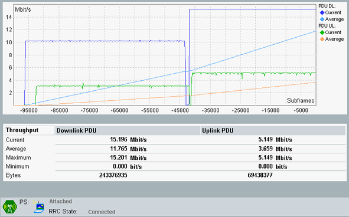

The tab shows the measurement results in a diagram and a table. The connection status information displayed at the bottom is the same as in the LTE signaling main view.
The most important settings of the "LTE signaling" application can be accessed via the "Signaling Parameters" softkey and the related hotkeys.
To switch to the signaling application, press the "LTE Signaling" softkey two times.
The "Config" hotkey opens either the configuration dialog of the measurement or the configuration dialog of the signaling application, depending on which softkey is active.

For a detailed description of the results, see "Measurement Results".
Remote command: